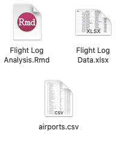

The Result


A link for the Airport Code CDV File is provided. (This only contains USA domestic airport codes. International Locations need to be manually added)
The Custom Flight excel file will be completely user created. This should feature all of the user’s flights taken & include 5 columns:
Save all files to the same folder, in my example named “Flight Log”. In empty .Rmd or .R file, set working directory. Install and load the following packages into your file.
Finally, load the 2 remaining files (.CSV and .xlsx) into the R file.
flight_log_raw is the custom flight path excel file, while airports is the airport code and information file.
library(openxlsx)
library(ggplot2)
library(maps)
library(mapproj)
library(tidyverse)
library(sp)
library(geosphere)
library(ggrepel)
flight_log_raw <- read.xlsx('Flight Log Data.xlsx')
airports <- read.csv('airports.csv')excel_numeric_to_date function will convert excel numbers into dates. Switch the Date column in our original dataframe to be the converted date.
flight_log_raw$Date <- janitor::excel_numeric_to_date(flight_log_raw$Date)We need to clean & join the airport file (containing latitudes and longitudes) to our custom flight log excel file. We’ll create 2 seperate dataframes: 1 for the origin and 1 for the destination.
Using tidyverse principles, (%>%), select only the IATA_CODE, LONGITUDE, and LATITUDE from the airports dataframe and rename each to indicate this is FROM the origin.
We’ll need to create the same dataframe with different column names indication it’s TO the destionation
This will be called airports_F (F indication “From”)
airports_F <- airports %>%
select(IATA_CODE, LONGITUDE, LATITUDE) %>%
rename(From = IATA_CODE, Longitude_F = LONGITUDE, Latitude_F = LATITUDE)
Repeat this step, creating another dataframe for the destinations. The only difference in this dataframe is the column names, these should be indicative of data going TO the destinations.
This will be called airports_T
airports_T <- airports %>%
select(IATA_CODE, LONGITUDE, LATITUDE) %>%
rename(To = IATA_CODE, Longitude_T = LONGITUDE, Latitude_T = LATITUDE)Now we need to join each newly created dataframe onto our flight log excel file, flight_log_raw. Using the left_join() function, include the flight log first and airports_F column second. The dataframes will merge together, combined on the column “From”.
left_join(). This is what is used to “match” each dataframe together
flight_log_F <- left_join(flight_log_raw, airports_F)
flight_log_F_T <- left_join(flight_log_F, airports_T)
flight_log_F_T## Date Origin Destination From To Longitude_F Latitude_F
## 1 2018-05-01 Chicago Edinburgh ORD EDI -87.90446 41.97960
## 2 2018-05-14 London Chicago LHR ORD -0.45400 51.47000
## 3 2021-04-03 Omaha Chicago OMA ORD -95.89417 41.30252
## 4 2021-04-10 Chicago Omaha ORD OMA -87.90446 41.97960
## 5 2021-05-06 Omaha Chicago OMA ORD -95.89417 41.30252
## 6 2021-05-10 Chicago Omaha ORD OMA -87.90446 41.97960
## 7 2021-07-09 Chicago San Francisco ORD SFO -87.90446 41.97960
## 8 2021-07-14 San Francisco Omaha SFO OMA -122.37484 37.61900
## 9 2021-07-31 Omaha Chicago OMA ORD -95.89417 41.30252
## 10 2021-08-05 Chicago Omaha ORD OMA -87.90446 41.97960
## 11 2021-09-17 Omaha Chicago OMA ORD -95.89417 41.30252
## 12 2021-09-23 Chicago Los Angeles ORD LAX -87.90446 41.97960
## 13 2021-09-27 Los Angeles Chicago LAX ORD -118.40807 33.94254
## 14 2021-10-02 Chicago Omaha ORD OMA -87.90446 41.97960
## 15 2021-11-22 Omaha Chicago OMA ORD -95.89417 41.30252
## 16 2021-11-30 Chicago Omaha ORD OMA -87.90446 41.97960
## 17 2021-12-18 Omaha Chicago OMA ORD -95.89417 41.30252
## 18 2021-12-29 Chicago Omaha ORD OMA -87.90446 41.97960
## 19 2021-01-29 Omaha San Francisco OMA SFO -95.89417 41.30252
## 20 2022-02-01 San Francisco Honolulu SFO HNL -122.37484 37.61900
## 21 2022-02-05 Honolulu San Francisco HNL SFO -157.92241 21.31869
## Longitude_T Latitude_T
## 1 -3.37000 55.94990
## 2 -87.90446 41.97960
## 3 -87.90446 41.97960
## 4 -95.89417 41.30252
## 5 -87.90446 41.97960
## 6 -95.89417 41.30252
## 7 -122.37484 37.61900
## 8 -95.89417 41.30252
## 9 -87.90446 41.97960
## 10 -95.89417 41.30252
## 11 -87.90446 41.97960
## 12 -118.40807 33.94254
## 13 -87.90446 41.97960
## 14 -95.89417 41.30252
## 15 -87.90446 41.97960
## 16 -95.89417 41.30252
## 17 -87.90446 41.97960
## 18 -95.89417 41.30252
## 19 -122.37484 37.61900
## 20 -157.92241 21.31869
## 21 -122.37484 37.61900
THIS IS IMPORTANT! These dataframes will both contain the SAME column names. We will be joining by row, therefore requiring identical column naming conventions
cities_origin <- flight_log_F_T %>%
distinct(Origin, From, Longitude_F, Latitude_F) %>%
rename(City = Origin, Airport = From, Longitude = Longitude_F, Latitude = Latitude_F)
cities_dest <- flight_log_F_T %>%
distinct(Destination, To, Longitude_T, Latitude_T) %>%
rename(City = Destination, Airport = To, Longitude = Longitude_T, Latitude = Latitude_T)
cities_df <- distinct(rbind(cities_origin, cities_dest))
cities_df## City Airport Longitude Latitude
## 1 Chicago ORD -87.90446 41.97960
## 2 London LHR -0.45400 51.47000
## 3 Omaha OMA -95.89417 41.30252
## 4 San Francisco SFO -122.37484 37.61900
## 5 Los Angeles LAX -118.40807 33.94254
## 6 Omaha OMA -95.89417 41.30252
## 7 Honolulu HNL -157.92241 21.31869
## 8 Edinburgh EDI -3.37000 55.94990
## 9 Chicago ORD -87.90446 41.97960
Create a variable pulling the “world” mapping data. To highlight countries that have been traveled to, mutate a new column onto the “world” data including countries that have been traveled to. In my example, “USA” & “UK” are the countries traveled too.
The first color, “#c2e3ff”, is the HEX value of our highlighted countries. All unvisited countries will default to the 2nd color, or “lightgray” in this instance.
world <- map_data("world")
world <- mutate(world, fill = ifelse(region %in% c("USA", "UK"), "#c2e3ff", "lightgray"))Next, we will construct the actual plot. There are 4 main “geom”-layers to create this plot:
(geom_map())(geom_point())(geom_curve())(geom_text())
For the base map, our established world variable is the input data. Corresponding longitude and latitude are the x & y axes. The fill is equivalent to the fill column in our world dataframe, established in our section above.
For both the points and curve, use the full flight_log_F_T dataframe, with longitude and latitude as the x & y axes. Ensure inherent.aes is FALSE for each the geom_point functions.
To zoom in on a certail region, use coord_cartesian and set X & Y limits corresponding to the longitudes and latitudes wanted. Finally, use our distinct cities dataframe, cities_df, as the data for text on the plot.
p <- ggplot() +
geom_map(data = world, map = world,
aes(long, lat, map_id = region, fill = fill),
color = "black", size = 0.1) +
scale_fill_identity() +
geom_point(data = flight_log_F_T, mapping = aes(Longitude_F, Latitude_F), inherit.aes = FALSE) +
geom_point(data = flight_log_F_T, mapping = aes(Longitude_T, Latitude_T), inherit.aes = FALSE) +
geom_curve(data = flight_log_F_T, aes(x = flight_log_F_T$Longitude_F,
y = flight_log_F_T$Latitude_F,
xend = flight_log_F_T$Longitude_T,
yend = flight_log_F_T$Latitude_T, alpha = 0.4),
angle = 80, size = 0.8) +
coord_cartesian(xlim = c(-150, 10), ylim = c(0, 80)) +
geom_text_repel(data = cities_df, aes(Longitude, Latitude, label = City), size = 3.5) +
theme(axis.title = element_blank(),
axis.text = element_blank(),
axis.ticks = element_blank(),
legend.position = "") +
ggtitle("Flights of 2018 - 2021", subtitle = "Hoping to coquer the skies more!")